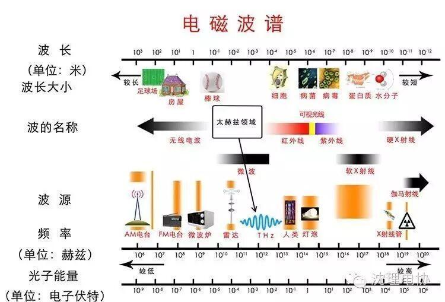
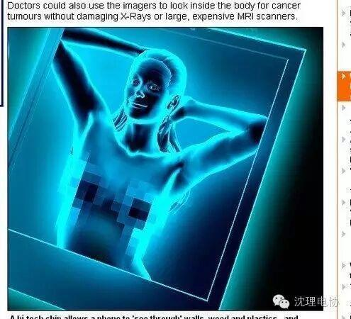

使用小程序
目前，科学家最新设计可使科幻情节转化为现实，他们最新设计的一种高科技芯片可使手机像“X射线透视器”一样工作。
互补金属氧化物半导体技术与兆赫电磁波谱结合在一起可形成“透视器”，能够呈现墙壁之中的物体，甚至能够诊断人体内器官
这种高科技芯片可使手机“看穿”墙壁、树木和塑料，甚至还能够透视人们的衣物。医师不必使用X射线或者昂贵的核磁共振扫描仪，基于这种成像器便能观测人体内部是否存在癌肿瘤。
研究人员称，它可使DIY者探测到墙壁中的螺柱，或者验证伪造货币。目前，这种高科技芯片仅能在较短距离工作，以微芯片大小规格装配在手机或者其他手持电子设备上。据悉，研究小组在研究中引入一种很少使用的电磁波谱段，但是这种兆赫波段电磁波谱处于微波和红外线波长范围，此前并未被多数消费者设备所使用。
美国德克萨斯州拉斯大林分校电子工程教授肯尼思博士说：“我们建立了一种方法，开辟了之前消费者未曾利用的电磁波谱部分。兆赫等级电磁波谱范围充满着无限潜能，我们可完全从中受益。”

